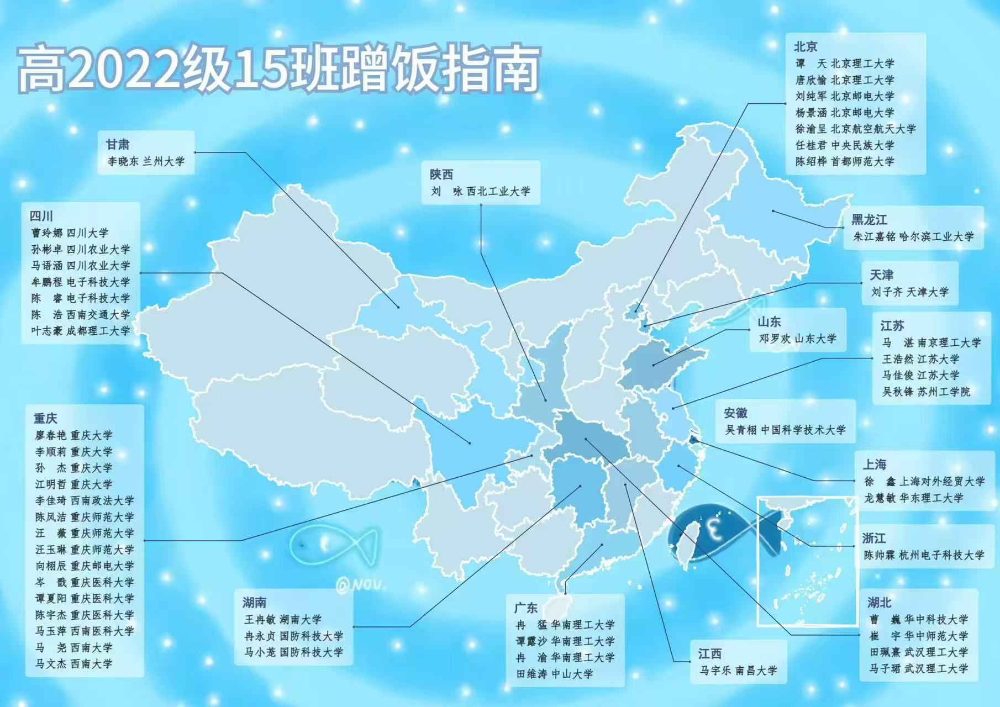

班级关键词
认真、热闹、互相打气。有人擅长解题，有人负责活跃气氛，有人在运动会冲线，也有人把每次班会都拍成了照片。
Private Access
请输入访问密码后进入网站。
班级介绍
认真、热闹、互相打气。有人擅长解题，有人负责活跃气氛，有人在运动会冲线，也有人把每次班会都拍成了照片。
第一次军训汇演、运动会接力、元旦晚会、毕业合照、最后一节班会课，都是这个网站最应该长期保存的内容。
新闻和留言板用于发布聚会安排、升学近况、城市小组活动，让分散在不同地方的同学仍能看见彼此。
Destination
这张图记录了高2022级15班同学们毕业后的去向，可以作为班级首页的重要纪念图长期保存。

Explore
选择一个板块查看详情或贡献你的回忆。